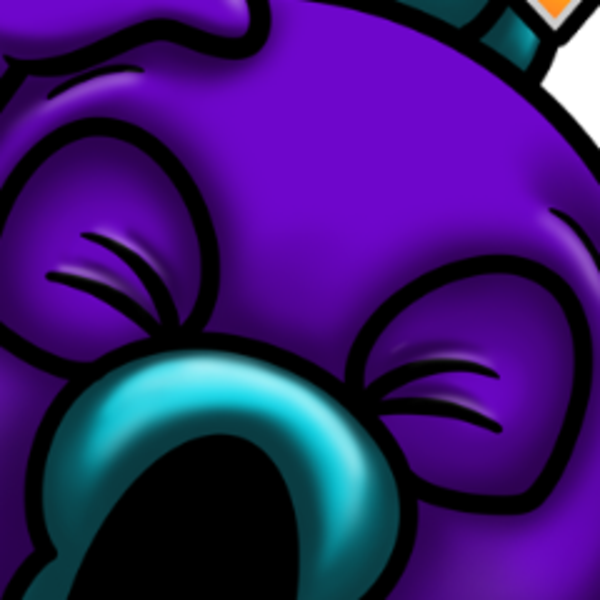

Pannello di modifica
slayer_beard
Da qui si cambiano i testi, i link, gli orari e le immagini del sito. Serve la password del pannello.
Il server non ha ancora una password. Scegline una adesso: servirà ogni volta che apri questo pannello. Non si recupera, si può solo cambiare dal computer dove gira il sito.
La sessione è scaduta. Le modifiche che avevi in corso sono ancora qui: rientra e le ritrovi come le hai lasciate.
Password persa? Dal computer dove gira il sito:
node server/imposta-password.js